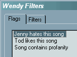
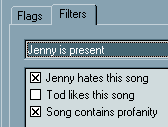
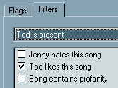
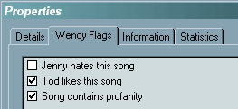

· What in the world is a 'Wendy Filter'?
(Entry last updated on April 15th, 2003)Wendy is the name of one of Hugo's former girlfriends. The idea goes something like this:
He wanted to be able to tell the player when Wendy was in the car. Then the player would simply not play any tunes that Wendy didn't like. The tunes would, for all intents and purposes, be "hidden" from the user interface, even if you performed a direct search for a specific tune.
In version 2.0 of the software, Wendy filters were added, but in a slightly more complicated version. Wendy filters can now be "positive" as well as "negative". A negative filter will hide the filtered tracks during playback on the player, a positive filter will show only the filtered tracks. Note that the tracks are hidden only at playback time on the player, and only when the appropriate filters are selected. The tracks are not hidden in the Emplode screens.
There are three parts to creating Wendy Filters:
- Wendy Flags: These are tags which get applied to individual songs. Examples of flags on my player are:
Jenny hates this song
Tod likes this song
Song contains profanity
For example, I would tag all of the Nine Inch Nails tunes on my player with both the "Tod likes" and "Jenny hates" flags. Certain tunes on the player would be flagged with the "Profanity" flag, which happens to include many NIN tunes, but also certain Paula Cole tunes and even a Sarah McLachlan tune.
- Wendy Filters: These are behaviors which use the flags for reference. Examples of filters on my player are:
Jenny is present
Tod is present
Children or grandparents are present
For each filter, you choose whether a given flag is excluded, preferred, or "don't care".
- Filters selection on the player: This chooses which filter (if any) is active at any given time.
The first step in using Wendy Filters is to open Emplode and connect to your player. Open the Tools/Wendy Filters menu, select the "Flags" tab, and create some flags:

These flags are simply names. They don't do anything yet, until you assign them to some filters and to some songs.
Next, go to the "Filters" tab and create some filters. Then assign some flags to those filters by checking the box next to the filter name. IMPORTANT: click on the box more than once to see how it works. This is how you select positive or negative. It cycles between "preferred" (a check mark, a positive filter), "exclude" (an X, a negative filter), and "don't care" (empty). Here is an example of some excludes:

In the example above, songs with profanity and songs that Jenny hates will be excluded when Jenny is in the car. Note the X's in the boxes.
Here is an example of using a flag in "preferred" mode:

In the above example, if Tod is present, the player will play only Tod's favorite songs. Note the check mark in the box.
Then you need to go through your collection and select songs and apply flags. Select single songs, or group-select songs, right-click and hit Properties, then select the "Wendy Flags" tab:

After you're done, don't forget to synch with the player.
After adding the filters and synching, a new "Filters" option will appear in the player's main menu. You can choose to have only one filter active at any given time (or "none"). When Jenny sits down in my car, for example, I can select the "Jenny is present" filter, and all of the songs which Jenny hates will not play (and will, for all practical purposes, be invisible on the player).
When I'm by myself, I can go to the Filters menu and select "none", and all of the hidden songs will re-appear.
|